North
The North of Brazil has countless amazing locations. The region comprises 7 states: Acre, Amapa, Amazonas, Para, Rondonia, Roraima, and Tocantins. It is the largest region of Brazil, in which you will find the largest tropical rainforest in the world, the Amazon, as well as the Amazon River Basin, the largest drainage basin on the planet. Fall in love with incredible destinations such as Jalapao, Mount Roraima National Park, and the freshwater beaches of Alter do Chao.
Belem

The Para state capital is one of the oldest in Brazil, a charming and beautiful destination that offers lots of attractions.
Porto Velho
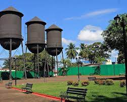
Those who wish to discover new places and be amazed by lush natural landscapes without giving up the comforts of an urban center will find that Porto Velho is the ideal destination for them.
Manaus
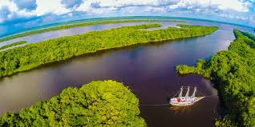
Manaus is a charming and cultural city. The green Amazon Forest, the dark waters of Rio Negro, the muddy waters of Solimões River, exotic local cuisine, diverse architecture, and very welcoming people are some of the city’s treasures. One visit is all it takes to fall in love with the capital of Amazonas State.
Northeast
The Northeast of Brazil is home to numerous idyllic locations. The region comprises 9 states: Maranhão, Piauí, Ceará, Rio Grande do Norte, Paraíba, Pernambuco, Alagoas, Sergipe, and Bahia. The region boasts the longest coastline in the country, and has breathtaking landscapes and incredible natural beauty. This includes the beaches of Fernando de Noronha, the sand dunes of Lençóis Maranhenses, the mountains of Chapada Diamantina, and the islands and mangroves of the Parnaíba River Delta.
Aracaju
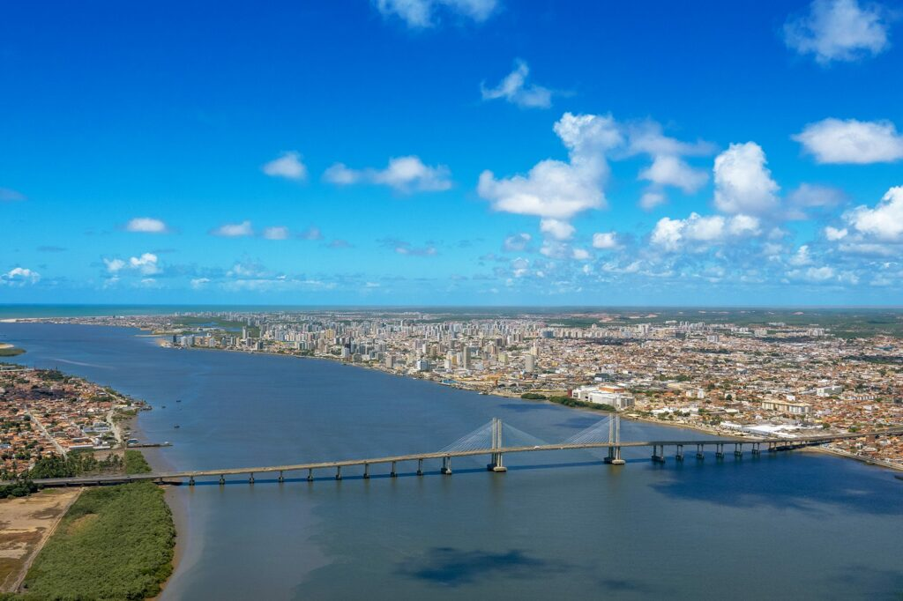
Aracaju, the capital city in the state of Sergipe, has beautiful beaches where visitors will be able to rest or have fun surrounded by beautiful sand dunes and coconut trees.
Porto de Galinhas
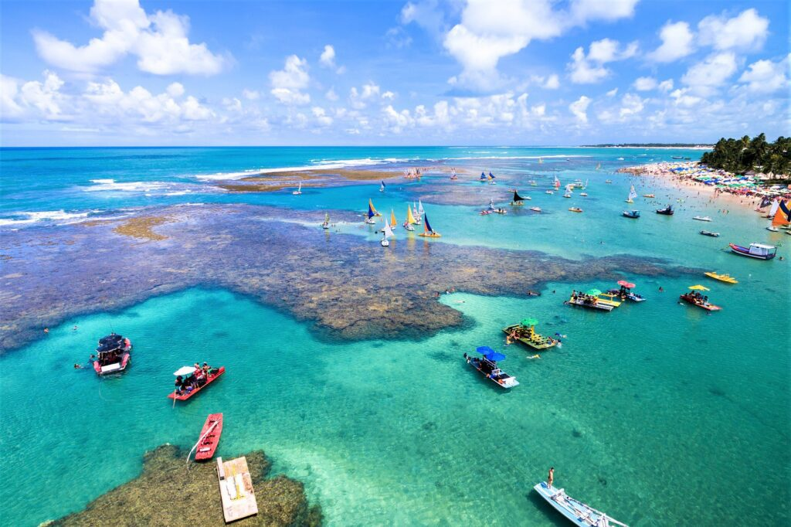
Crystal-clear waters, natural pools, and excellent infrastructure place Porto de Galinhas among the most charming and unforgettable destinations in Brazil.
Porto Seguro
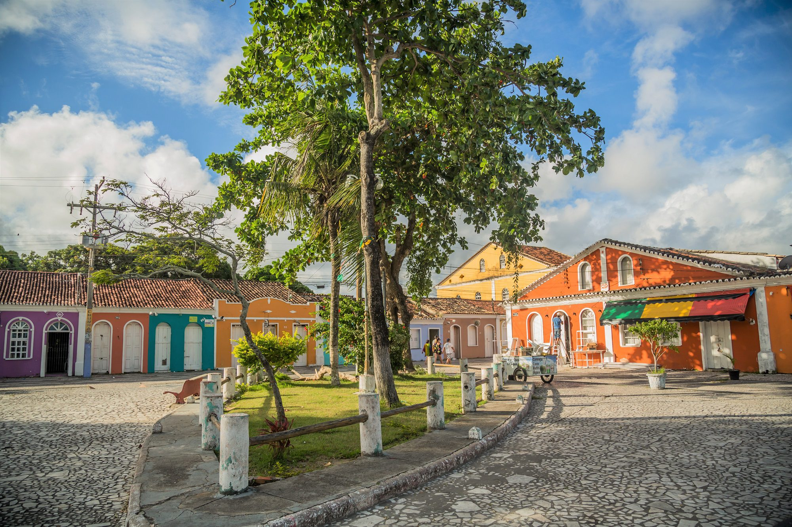
The city of Porto Seguro, gateway to the region known as the Discovery Coast, is a real-life lesson in Brazilian history. It was there that the Portuguese first landed back in the year 1500, eventually falling in love with the whole region. You will certainly feel the same way.
Midwest
The Brazilian Midwest Region will impress anyone who visits it. Comprising 3 states, Mato Grosso, Mato Grosso do Sul, and Goiás, the region also includes the Federal District, where the capital of Brazil, Brasília, is located. With breathtaking landscapes in destinations such as Bonito, with its crystal-clear rivers, Chapada dos Guimarães National Park, Chapada dos Veadeiros National Park, and Pantanal National Park, this last one on the UNESCO World Natural Heritage List, the Midwest is undoubtedly an incredible region.
Cuiaba
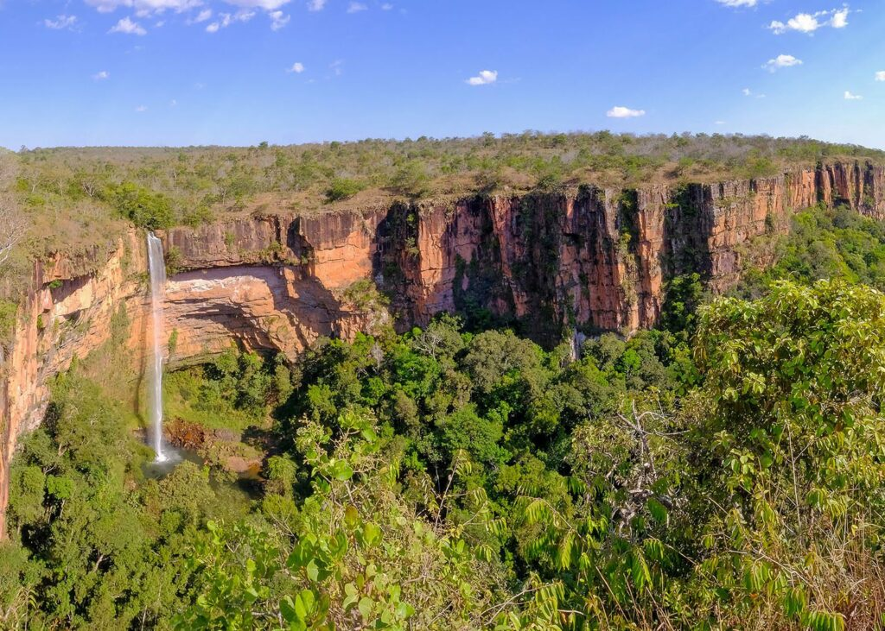
The capital of Mato Grosso State is renowned for its colonial architecture and its green urban areas. The city is also the gateway to some of the main tourist destinations in the country: the north side of the Pantanal and Chapada dos Guimarães National Park.
Caldas Novas
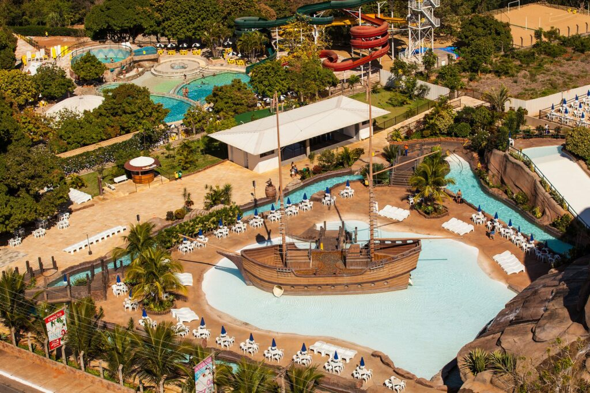
Caldas Novas is located in a region that is home to one of the largest hydrothermal parks in the world. The region’s water springs, with temperatures ranging between 36 and 70 degrees celsius, are the main reason for the city’s popularity.
Goiania
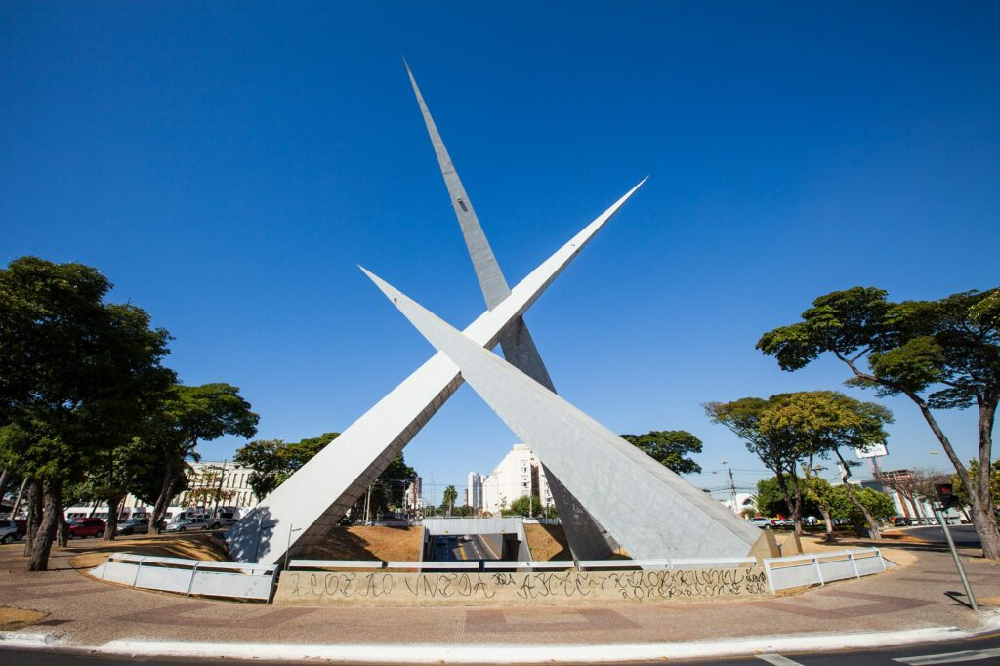
The capital of the state of Goiás impresses everyone with its rich culture, welcoming people, and for being so well planned. It has more than 900,000 trees spread along the streets and parks, which makes it a beautiful destination with a lively social atmosphere.
Southeast
The Southeast of Brazil has truly astonishing landscapes. The region comprises 4 states: Rio de Janeiro, São Paulo, Minas Gerais, and Espírito Santo. Rio de Janeiro is famous for its tourist attractions, such as Corcovado Mountain, Christ the Redeemer, Sugarloaf Mountain, and the beaches of Copacabana and Ipanema. But there is more. You can experience other incredible destinations, such as São Paulo, with its cosmopolitan diversity, the historic city of Ouro Preto, the charming Vitória, capital city of Espírito Santo, and many others.
Belo Horizonte
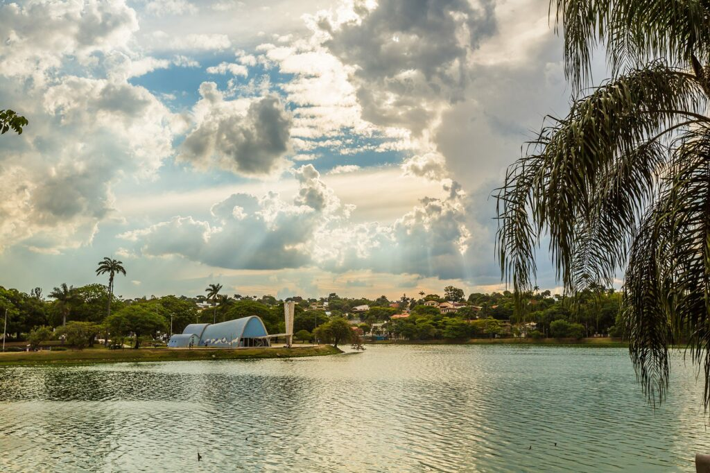
Home to countless attractions, the capital of Minas Gerais State is an amazing destination that combines culture, gastronomy, and creativity.
Paraty
The town of Paraty combines history, breathtaking landscapes, extraordinary natural beauty, and a unique architectural ensemble.
Vitoria
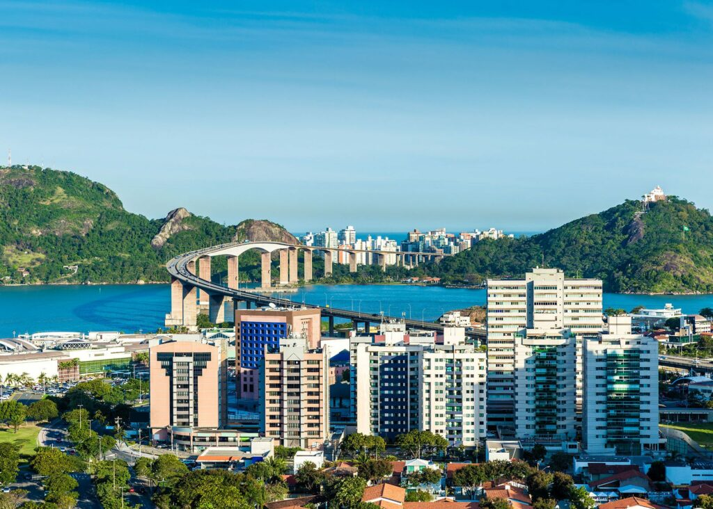
One of three capital cities in Brazil located on an island, Vitória has a rich history and fascinating culture. Visitors to the region will be amazed by all the incredible man-made attractions and unique natural beauty.
South
Those who visit the South Region of Brazil will find it unforgettable. Comprising 3 states, Paraná, Santa Catarina, and Rio Grande do Sul, the region has delightful destinations. Visitors will be able to experience places such as the amazing Iguaçu National Park, on the UNESCO World Natural Heritage List, as well as charming mountain destinations such as the highlands in Rio Grande do Sul and Santa Catarina.
Ilha do Mel
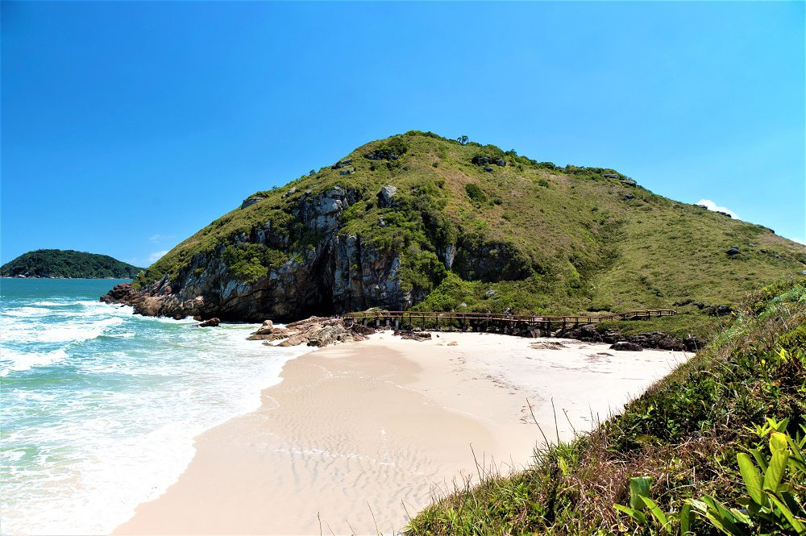
Calm, stunning scenery and excellent beaches make up this paradise located in Paranaguá Bay, only 130 km from Curitiba.
Florianopolis
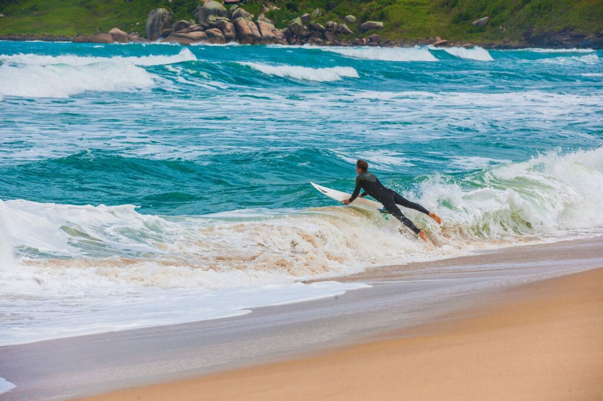
Popularly known as the Magic Island, Florianopolis is the capital city in Santa Catarina State. Visitors will fall in love with its charm and natural beauty.
Gramado
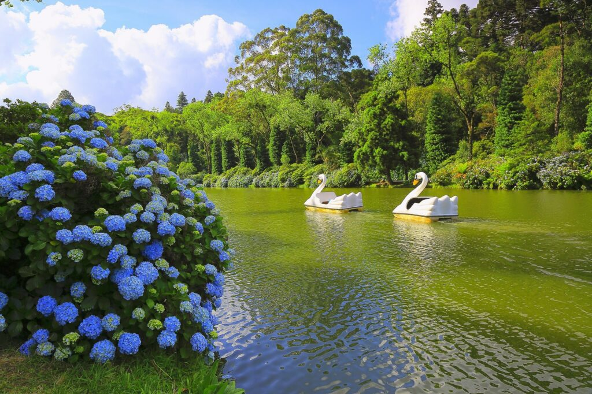
Gramado is a charming and beautiful city. It only takes a short walk around the city for visitors to fall in love with its flowery streets, welcoming people, its European-style architecture, and its rich local cuisine.